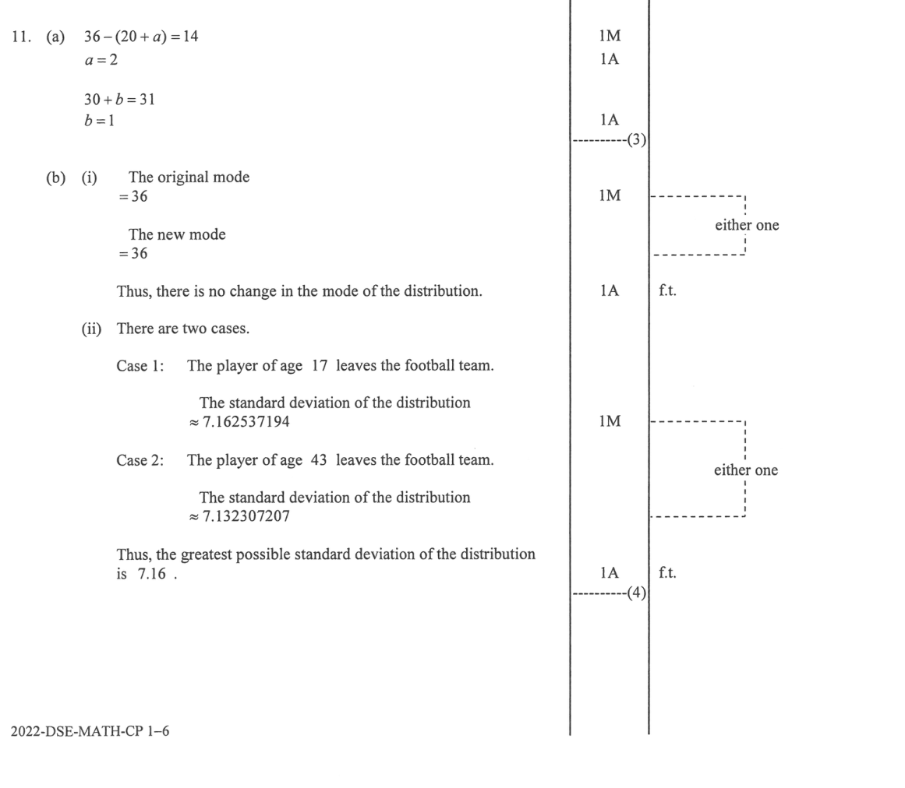

2022 DSE 數學 P1 Q11 答案＋詳解
題目（中文卷）
下面的幹葉圖顯示某足球隊球員的年齡的分佈。
| 幹（十位） | 葉（個位） |
|---|---|
| 1 | 7 8 9 |
| 2 | 0 a a 8 8 9 |
| 3 | b b 5 5 6 6 6 7 8 |
| 4 | 3 |
該分佈的四分位數間距及中位數分別為 14 及 31。
(a) 求 $a$ 及 $b$。（3 分）
(b) 某球員現退出該足球隊。
(i) 該分佈的眾數有否因該球員退出而改變？試解釋你的答案。
(ii) 若該分佈的分佈域減小，求該分佈的最大可取標準差。（4 分）
English version（英文卷題目）
The stem-and-leaf diagram below shows the distribution of the ages of the players of a football team.
| Stem (tens) | Leaf (units) |
|---|---|
| 1 | 7 8 9 |
| 2 | 0 a a 8 8 9 |
| 3 | b b 5 5 6 6 6 6 7 8 |
| 4 | 3 |
The inter-quartile range and the median of the distribution are 14 and 31 respectively.
(a) Find (a) and (b). (3 marks)
(b) A player now leaves the football team.
(i) Is there any change in the mode of the distribution due to the leaving of the player? Explain your answer.
(ii) If the range of the distribution is decreased, find the greatest possible standard deviation of the distribution. (4 marks)
官方評卷參考（Marking Scheme）

考評報告
甚佳。超過70%考生能求得a及b的值。甚佳。超過75%考生能得出該分佈的眾數沒有改變的結論,並附以合理的解釋。良好。部分考生誤以7.13為該分佈的最大可取標準差。
相關課題
技能分析（呢題考咩、陷阱喺邊）
- 主課題
- 集中趨勢與離差
- 相關課題
- 集中趨勢與離差、統計圖表